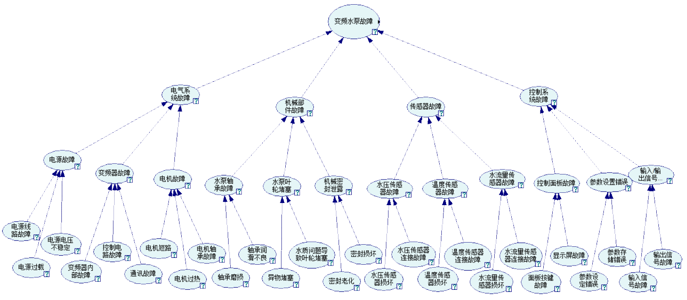

故障处理数据统计
已处理
42
占比 2%
2%
未处理
11
占比 1%
1%
劣化可能性
劣化:4优化:6
正常/故障时间比
正常:9故障:1
设备故障树

×
追加证据
历史故障记录
- 电机故障2024/3/7 07：53
- 电机短路2024/1/4 14：37
- 控制面板故障2024/1/2 19：01
- 面板按键故障2023/12/22 11：46
- 轴承润滑不良2023/12/4 13：38
- 通讯故障2023/12/4 09：07
- 电源过载2023/11/18 16：52
- 密封老化2023/11/6 23：27
- 输入信号故障2023/11/1 00：42
原因
- 故障模式故障可能性解决策略
- 电源线路故障60%1.检查电源线路是否松动或损坏。
2.使用万用表检查电源线路的通断性。
3.更换损坏的电源线路。 - 电源过载71%1.检查蓄水箱是否超载。
2.减少蓄水箱的负载。
3.更换容量更大的电源。 - 电源电压不稳定55%1.检查电源电压是否在可接受的范围内。
2.使用稳压器稳定电源电压。
3.更换受损坏的电源组件。 - 变频器内部故障62%1.检查变频器内部连接是否松动或损坏。
2.使用万用表检查变频器的内部组件。
3.更换损坏的变频器内部组件。 - 控制电路故障58%1.检查控制电路连接是否松动或损坏。
2.使用万用表检查控制电路的电压和电流。
3.更换损坏的控制电路组件。 - 通讯故障94%1.检查通讯线缆是否松动或损坏。
2.使用通讯测试仪检查通讯信号。
3.更换损坏的通讯组件。 - 电机短路57%1.检查电机连接是否松动或损坏。
2.使用万用表检查电机的绝缘。
3.更换损坏的电机。 - 电机过热63%1.检查电机通风是否良好。
2.清除电机上的灰尘和碎屑。
3.更换损坏的电机风扇。 - 电机轴承故障57%1.检查轴承是否磨损或损坏。
2.润滑或更换磨损的轴承。
3.调整松动的轴承。 - 轴承磨损62%1.检查轴承是否磨损。
2.润滑或更换磨损的轴承。
3.调整松动的轴承。 - 轴承润滑不良75%1.检查轴承是否得到适当的润滑。
2.润滑轴承。
3.更换损坏的润滑脂。 - 异物堵塞62%1.检查是否有异物堵塞。
2.清除堵塞物。
3.更换损坏的部件。 - 水质问题导致叶轮堵塞72%1.检查水质是否符合要求。
2.采取措施改善水质。
3.清除叶轮上的堵塞物。 - 密封老化86%1.检查密封是否老化。
2.更换老化的密封。
3.调整松动的密封。 - 传感器损坏75%1.检查传感器是否损坏。
2.更换损坏的传感器。
3.调整松动的传感器。 - 传感器连接故障59%1.检查传感器连接是否松动或损坏。
2.重新连接传感器。
3.更换损坏的连接器。 - 面板按键故障66%1.检查面板按键是否损坏。
2.更换损坏的面板按键。
3.调整松动的面板按键。 - 显示屏故障70%1.检查显示屏是否损坏。
2.更换损坏的显示屏。
3.调整松动的显示屏。 - 参数设定错误82%1.检查参数设置是否正确。
2.按照制造商的说明重新设置参数。
3.更换损坏的参数存储器。 - 参数储存错误55%1.检查参数储存器是否损坏。
2.更换损坏的参数储存器。
3.重新存储参数。 - 输入信号故障56%1.检查输入信号连接是否松动或损坏。
2.重新连接输入信号。
3.更换损坏的输入信号组件。 - 输出信号故障57%1.检查输出信号连接是否松动或损坏。
2.重新连接输出信号。
3.更换损坏的输出信号组件。
恶化
- 故障模式故障可能性解决策略
- 电气系统故障56%1.检查线路和连接器是否存在松动或损坏。
2.使用万用表检查线路的通断性。
3.更换损坏的组件。 - 机械部件故障56%1.检查机械部件是否磨损或损坏。
2.润滑或更换磨损的部件。
3.调整松动的部件。 - 传感器故障56%1.检查传感器连接是否松动或损坏。
2.使用万用表检查传感器的输出信号。
3.更换损坏的传感器。 - 控制系统故障56%1.检查控制系统的程序是否存在错误。
2.更新或重新编程控制系统。
3.更换损坏的控制组件。